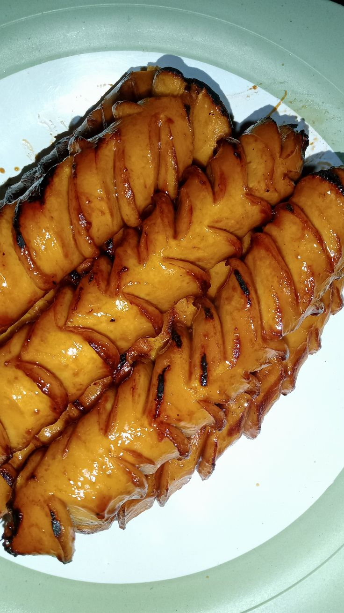

Sosis Bakar

Home
Deskripsi
Sosis bakar adalah camilan praktis berupa sosis (sapi/ayam) yang dibakar, diolesi bumbu campuran saus,mayones dan margarin, lalu dipanggang hingga mekar dan kecokelatan. Hidangan ini populer karena rasanya yang gurih-manis, tekstur renyah di luar, serta mudah dibuat untuk acara kumpul-kumpul.
Bahan-bahan
- 10 buah sosis sapi
- 2 sdm margarin
- 4 sdm saus samba
- 3 siung bawang merah
- 2 sendok makan saos
- 2 sdm kecap manis
Langkah-langkah
- Kerat-kerat sosis sesuai selera agar bumbu meresap dan mekar saat dibakar.
- Panaskan mentega di wajan
- Campurkan mayones, saus sambal, kecap manis dalam wadah. Aduk rata.
- Letakkan sosis di atas panggangan. Olesi seluruh permukaan sosis dengan bumbu oles menggunakan kuas.
- Panggang dengan api kecil, bolak-balik sosis sambil diolesi kembali dengan bumbu hingga mekar dan kecokelatan.
- Angkat dan sajikan sosis bakar dengan tambahan mayones atau saus sambal ekstra
Tips: Untuk hasil lebih maksimal, rebus sosis sebentar selama 3-5 menit sebelum dibakar agar teksturnya lembut di dalam namun renyah di luar.